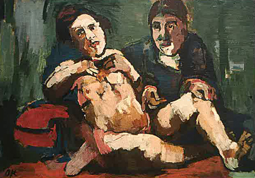

Friday, August the 28th, 2009
back to: title, date or indexes
We know the identities of six of the octogamist Medea Blenkinsop's husbands. There is the nobleman Blenkinsop himself, his horse trainer, the Emperor of China, the postman, the circus giant, and the maniac in the cellar. But what of the remaining two? Who were they?
Over the years, students of this kind of thing have toiled fruitlessly. This should not surprise us, as there are only certain kinds of toil which bear fruit, and even then, much of the fruit will be rotten and eaten away by canker-worms, at least in the orchards I frequent, with my stick and my lantern and my bird-scarifier.
Lately, however, evidence has come to light suggesting Medea Blenkinsop's seventh husband was none other than the dwarf Crepusco, confidante of the composer Binder. How like Medea Blenkinsop to be married to both a giant and a dwarf at the same time! This revelation, in a recent issue of the Bulletin Of Blenkinsopiana, has already stirred up a vipers' nest of controversy in the field. When I say “field”, I am referring to an academic field, that of Blenkinsop studies, not the field adjacent to one of the orchards in which I skulk, at night, breathing in the heady scent of rotting pears and persimmons. I cross the field to reach the orchard gate. There are many cows living in the field, it is their home, and though, after the Blunkett incident, the government has warned us of cow peril, I know the cows and the cows know me, and we have reached an understanding, and let me tell you here and now it is a fine, fine thing to have an understanding with cows, a finer thing than all else under the boundless firmament.
Much of the controversy centres upon the idea that Crepusco is being counted twice, in that he is the same husband as the maniac chained in the cellar. This is clearly gibberish. Crepusco was no maniac, at least not habitually, and it is absurd to suggest that Binder, a Triton among minnows in the world o' symphonic composition, would have had to creep down to the subterranean reaches of the Blenkinsop country pile every time he sought counsel from his confidante. In any case, what kind of composer would have a maniac for a confrere?—apart from Harrison Birtwistle, that is.
No, I think we may safely assume Crepusco was indeed a separate, seventh husband. The case is compelling. We know Medea Blenkinsop and Crepusco went a-walking together along perilous clifftop pathways, in all weathers, she in her kagoul and he in his amusing knitwear. We know there were clinches in grottos. We know they swapped railway timetables, something Medea never did with her fourth husband, the suspicious postman. And we know that Crepusco's torso was emblazoned with a tattoo, Rococo in design, spelling out the legend “God help me for I am besotted with Medea Blenkinsop and I worship the very spittle with which her lips are flecked”.
It is, actually, this last point that bolsters the otherwise worthless arguments of the anti-Crepuscoists. When, they ask, with some justification, were Medea Blenkinsop's lips ever spittle-flecked? Not a trace of spittle is ever depicted in any of the hundreds of portraits of her, whether they be photographs or paintings or crayon scribbles or pencil drawings or primitivist daubings or mezzotints by the noted mezzotintist Rex Tint or hyperrealist linocuts by the noted hyperrealist linocutter Rex Hyper. It may be that, battered by wild gales as they clung to one another upon a stormy clifftop, shouting their heads off to be heard above the screeching of auks and gulls and kittiwakes, a fleck or two of spittle might have appeared, fugitively, upon Medea Blenkinsop's lip, without a Rex Tint there to record it for posterity. We shall never know.
Nor, it seems, are we likely to know the identity of husband number eight. The author of the essay in the Bulletin admits as much, when she writes:
The more I have studied this kind of thing, the more convinced have I become that Medea Blenkinsop's eighth husband was but a phantom, a chimera, an invention of her madcap brain, woven from whole cloth, a life-sized rag doll she carted about with her, to the opera and to cocktail parties, much as Oskar Kokoschka did with the Alma Mahler doll he had made for him at the end of their affair. But I am not one hundred per cent sure, even now, even now, oh baby, twenty-four hours from Tulsa.

Self-portrait with Doll by Oskar Kokoschka (1921)
Hooting Yard on the Air, November the 5th, 2009 : “Five Years Ago” (starts around 17:42)